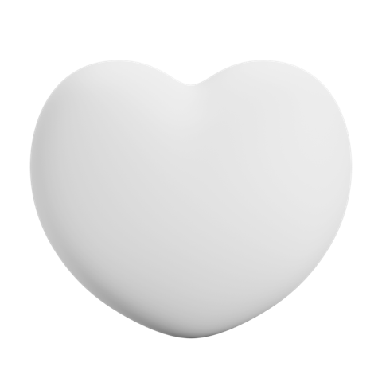
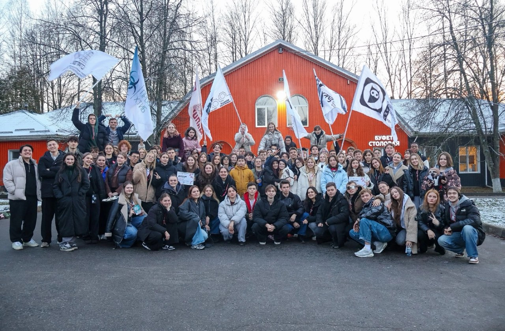
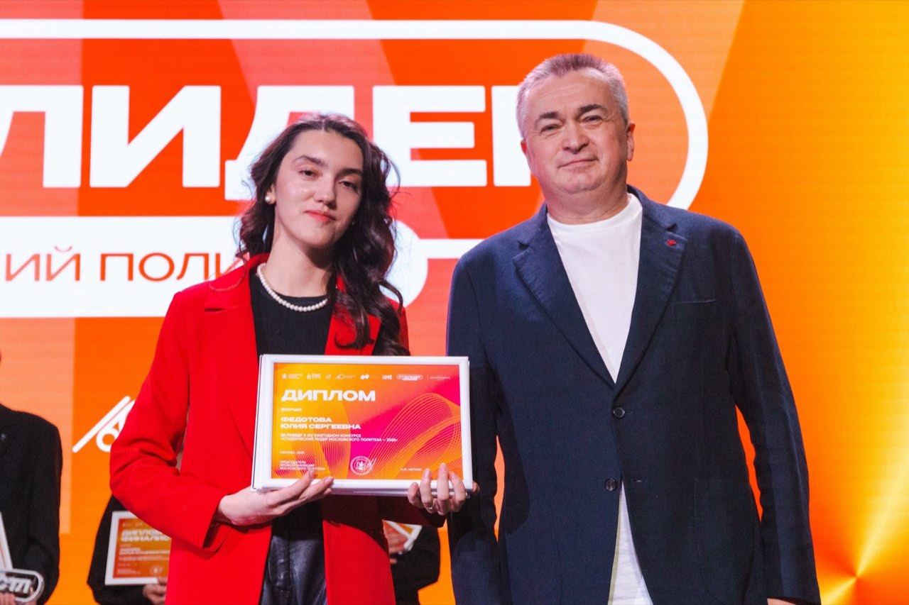
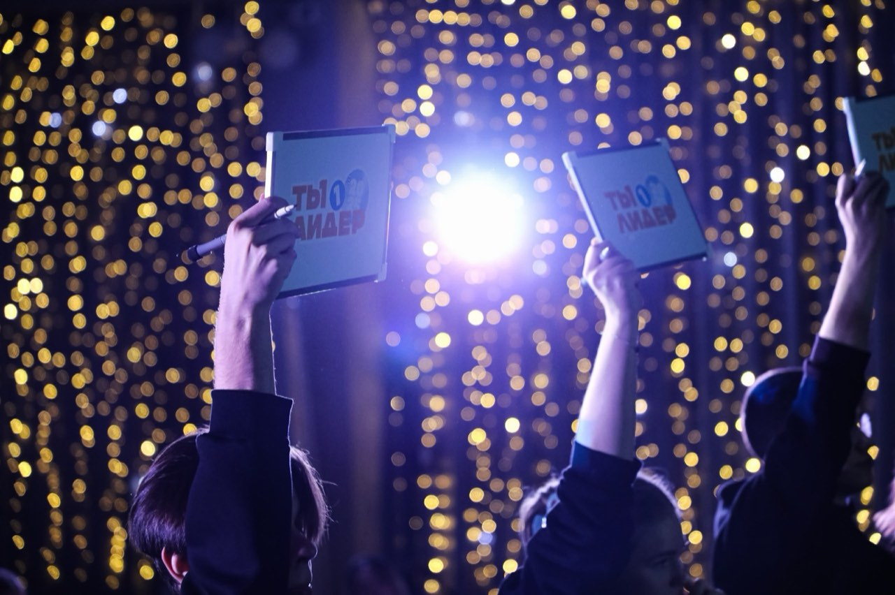
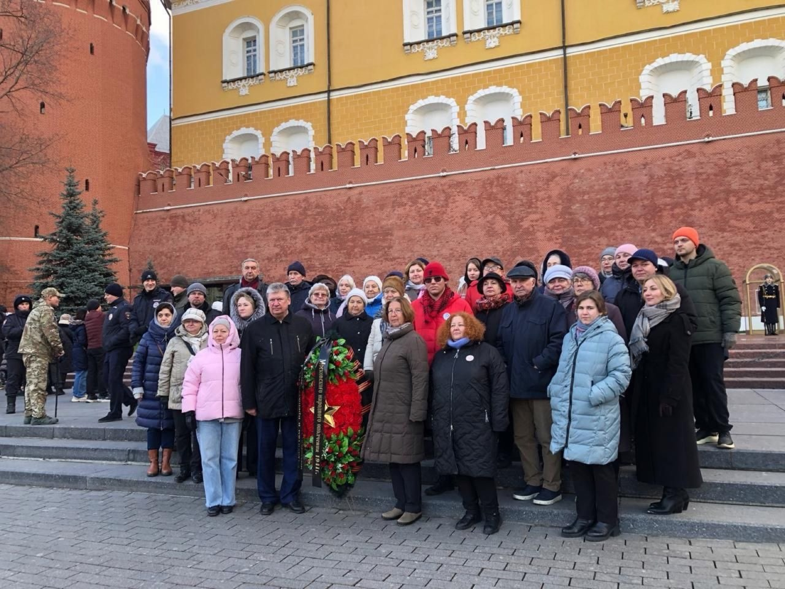
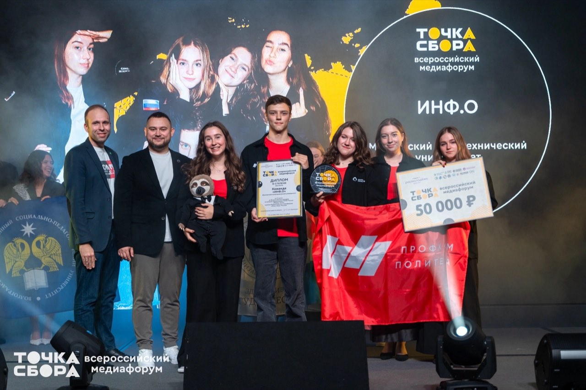
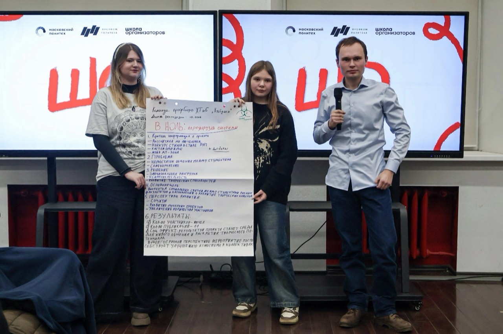
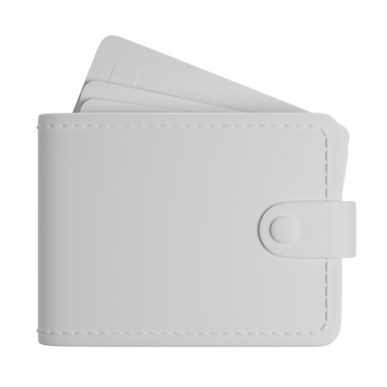

ул. Большая Семёновская, д. 38
Аудитория В-202
Твой проф.
Всегда на твоей стороне




Профорганизация
Московского Политеха
Команда единомышленников, которая делает твою жизнь лучше: защищаем права, помогаем со стипендиями и выплатами, организуем досуг и даём возможности для роста.
Слово председателя

2025 год стал для нас временем укрепления команды. Мы реагировали на запросы членов Профсоюза и выстраивали системную обратную связь — в досуговых и образовательных проектах, в позиционировании нашего бренда в университете. Итогом этой работы стало доверие: 73,4% студентов и 51% работников Московского Политеха.
Каждый день даёт нам новые возможности. Мы ответили на сотни вопросов, решили десятки проблем, провели успешную вступительную кампанию. Но это не предел!
Самое ценное, что есть у Профсоюза — это люди. Инвестируя в людей, в непрерывное образование и в укрепление сообщества, мы обеспечиваем потенциал для развития на долгие годы вперёд
Итоги
2025 года
Подробнее о нас
Особые
достижения
В 2025 году студенческая секция продолжила демонстрировать высокие результаты на различных уровнях
- 3 место во Всероссийском рейтинге студенческих объединений «ПроЛидер»
- Премия «ПИК» Московского Политеха — Профком Политеха лауреат в номинации «Победа года»
- Студсовет общежития №6 — 3 место в конкурсе на лучший студенческий совет общежития г. Москвы
- Профбюро Высшей школы печати и медиаиндустрии — 4 место в региональном конкурсе «Лучшее профбюро»
- Профорганизация стала членом Евразийской ассоциации профсоюзных организаций университетов


Свежие
новости
Все новости
Вступай
в профсоюз
Это несколько минут онлайн — или один визит в аудиторию В-202.
На сайте Общероссийского Профсоюза образования или через чат-бот «Твой проф».
Пошаговая инструкция →Б. Семёновская, 38. Пн–Пт с 10:30 до 17:30 — заполним заявление вместе.
Как добраться →Сообщество
ВКонтакте
Официальный и основной канал коммуникации студентов и Профорганизации. Здесь выходят членские предложения, анонсы выплат и культурно-массовых мероприятий.

Стипендии, материальная помощь, дотация — суммы, сроки и порядок подачи.
Путеводитель по выплатам